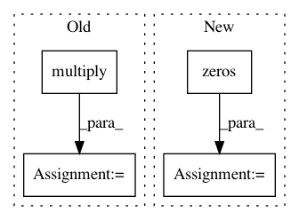

a6ba2cbf662fcb60ea5ab5079e247f3a6cad7957,autosklearn/metrics/classification_metrics.py,,bac_metric,#Any#Any#Any#,69
Before Change
tpr = tp / pos_num // true positive rate (sensitivity)
if (task != MULTICLASS_CLASSIFICATION) or (label_num == 1):
tn = np.sum(np.multiply((1 - solution), (1 - bin_prediction)), axis=0)
fp = np.sum(np.multiply((1 - solution), bin_prediction), axis=0)
tn = sp.maximum(eps, tn)
neg_num = sp.maximum(eps, tn + fp)
tnr = tn / neg_num // true negative rate (specificity)
After Change
:return:
label_num = solution.shape[1]
score = np.zeros(label_num)
bin_prediction = binarize_predictions(prediction, task)
[tn, fp, tp, fn] = acc_stat(solution, bin_prediction)
// Bounding to avoid division by 0
eps = 1e-15
In pattern: SUPERPATTERN
Frequency: 4
Non-data size: 4
Instances
Project Name: automl/auto-sklearn
Commit Name: a6ba2cbf662fcb60ea5ab5079e247f3a6cad7957
Time: 2016-01-22
Author: feurerm@informatik.uni-freiburg.de
File Name: autosklearn/metrics/classification_metrics.py
Class Name:
Method Name: bac_metric
Project Name: scikit-learn-contrib/DESlib
Commit Name: 0e17f47e9a4920e276bb61b60d6de16264bc6bcf
Time: 2017-12-29
Author: rafaelmenelau@gmail.com
File Name: pythonds/util/prob_functions.py
Class Name:
Method Name: entropy_func
Project Name: Qiskit/qiskit-aqua
Commit Name: 26949ac70fc9cff80e633b0476c306d7809c8263
Time: 2019-04-30
Author: ouf@zurich.ibm.com
File Name: qiskit/aqua/components/uncertainty_models/univariate_variational_distribution.py
Class Name: UnivariateVariationalDistribution
Method Name: __init__
Project Name: Qiskit/qiskit-aqua
Commit Name: 26949ac70fc9cff80e633b0476c306d7809c8263
Time: 2019-04-30
Author: ouf@zurich.ibm.com
File Name: qiskit/aqua/components/uncertainty_models/multivariate_variational_distribution.py
Class Name: MultivariateVariationalDistribution
Method Name: __init__